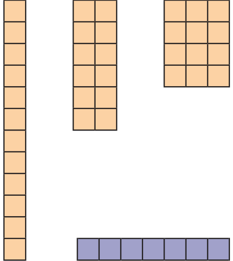
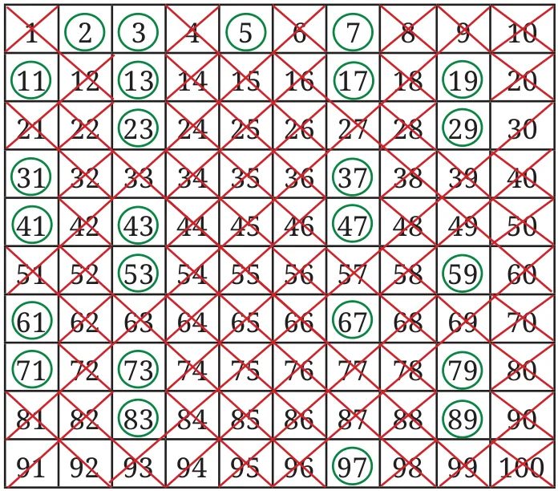
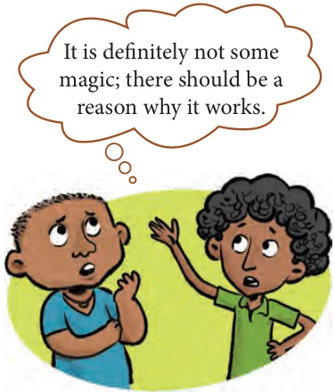

Guna and Anshu want to pack figs (anjeer) that grow in their farm. Guna wants to put 12 figs in each box and Anshu wants to put 7 figs in each box.
How many arrangements are possible?
Think and find out the different ways how —
- Guna can arrange 12 figs in a rectangular manner.
- Anshu can arrange 7 figs in a rectangular manner.
Guna has listed out these possibilities.

Observe the number of rows and columns in each of the arrangements. How are they related to 12?
In the second arrangement, for example, 12 figs are arranged in two columns of 6 each or \(12 = 2 \times 6\).
Anshu could make only one arrangement: \(7 \times 1\) or \(1 \times 7\). There are no other rectangular arrangements possible.
In each of Guna’s arrangements, multiplying the number of rows by the number of columns gives the number 12. So, the number of rows or columns are factors of 12.
We saw that the number 12 can be arranged in a rectangle in more than one way as 12 has more than two factors. The number 7 can be arranged in only one way, as it has only two factors — 1 and 7.
Numbers that have only two factors are called prime numbers or primes. Here are the first few primes — 2, 3, 5, 7, 11, 13, 17, 19. Notice that the factors of a prime number are 1 and the number itself.
What about numbers that have more than two factors? They are called composite numbers. The first few composite numbers are — 4, 6, 8, 9, 10, 12, 14, 15, 16, 18, 20.
What about 1, which has only one factor? The number 1 is neither a prime nor a composite number.
How many prime numbers are there from 21 to 30? How many composite numbers are there from 21 to 30?
Can we list all the prime numbers from 1 to 100?
Here is an interesting way to find prime numbers. Just follow the steps given below and see what happens.
Step 1: Cross out 1 because it is neither prime nor composite.

Step 2: Circle 2, and then cross out all multiples of 2 after that, i.e., 4, 6, 8, and so on.
Step 3: You will find that the next uncrossed number is 3. Circle 3 and then cross out all the multiples of 3 after that, i.e., 6, 9, 12, and so on.
Step 4: The next uncrossed number is 5. Circle 5 and then cross out all the multiples of 5 after that, i.e., 10, 15, 20, and so on.
Step 5: Continue this process till all the numbers in the list are either circled or crossed out.
All the circled numbers are prime numbers. All the crossed out numbers, other than 1, are composite numbers. This method is called the Sieve of Eratosthenes.
This procedure can be carried on for numbers greater than 100 also. Eratosthenes was a Greek mathematician who lived around 2200 years ago and developed this method of listing primes.

Guna and Anshu started wondering how this simple method is able to find prime numbers! Think how this method works. Read the steps given above again and see what happens after each step is carried out.